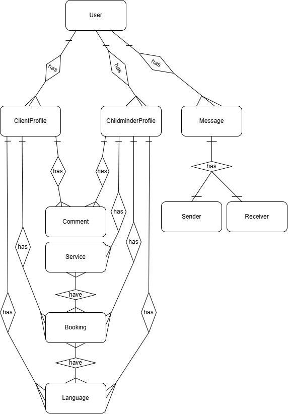
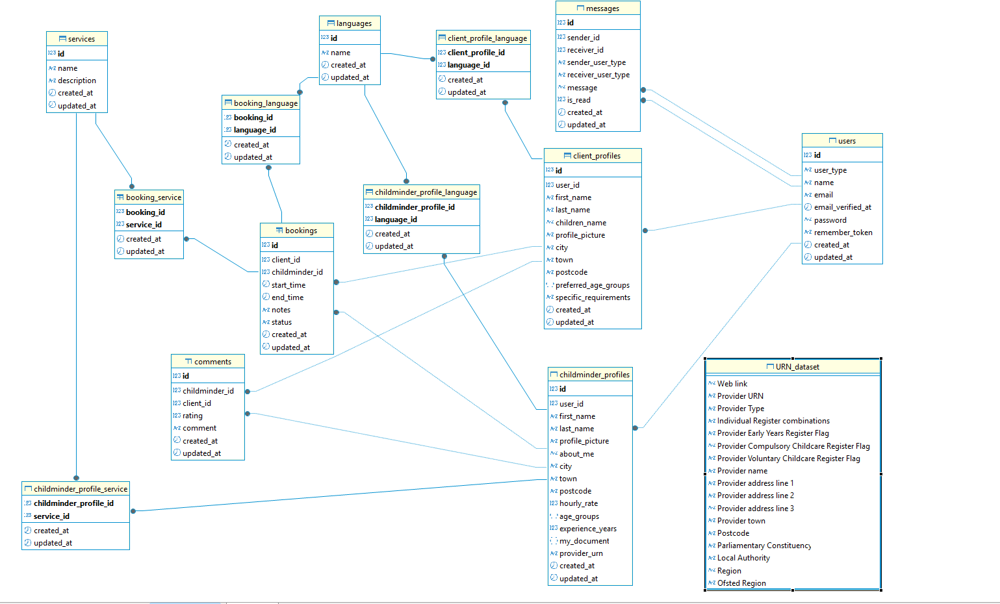

On-demand childminder service web application
Overview
This project introduces childminder as a unified childcare provider standard, ensuring that childminders can support children across all age groups while maintaining service consistency. The web application provides a user-friendly and practical web application to parents, while offering flexible part-time work opportunities to childminders. The project is proposed to improve interface usability, optimise functionalities, refine search filtering, and provide structured advertisement display to enhance efficiency in childcare selection. By simplifying category structures, improving search functionalities, and refining user experience, this study aims to eliminate barriers and create a more intuitive childcare platform. Through standardisation and usability improvements, the research contributes to the advancement of childcare services, ensuring greater accessibility and work flexibility for childminders.
Objectives
What is childminder?
Architecture
Module relation & data schema
Module relation & data schema
Module relation diagram
DBeaver Diagram
